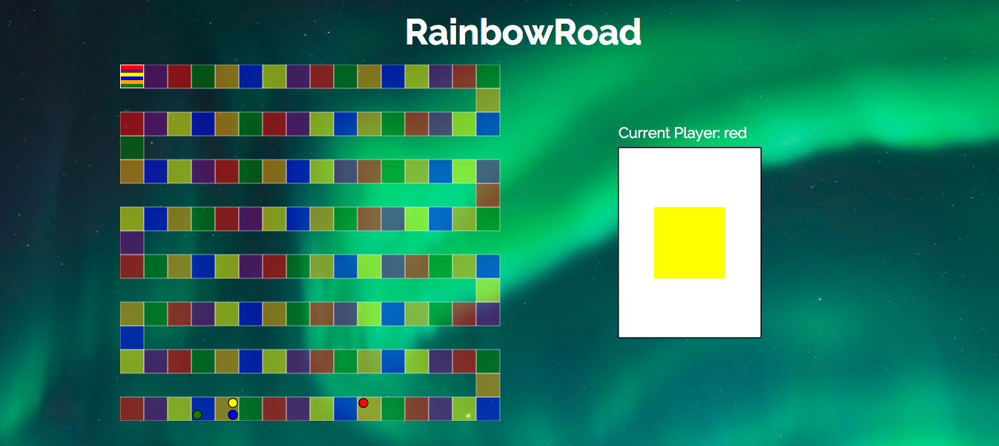

Edwin Lai
Growing up, I was always a huge techie, but I never had to touch anything more involved than scripts to solve my computer problems before college. The first time I ran into coding was during a distribution requirement for my major, applied mathematics, while attending UCLA. During that class, I found that coding came very naturally to me.
After graduation, because of industry trends, I decided to pivot to web development. I enrolled in App Academy to expedite this transition, and now I've built a full-stack web app, a JavaScript game, and a Ruby ORM.
Projects
Helping Hand | Github
Personal Fundraising Site Inspired by GoFundMe

Features
-
- High-performance single page web app powered by React and Flux.
-
- JavaScript search utility automatically filters results based on changes in user input.
-
- Uses Ruby on Rails custom routes to respond to AJAX requests not covered by RESTful routes.
RainbowRoad | Github
JavaScript Browser Game Influenced by Candyland
Features
-
- Animations used to move pieces and communicate gameplay instructions to players.
-
- Implements computer players that are equally competent compared to human players.
ModelMapper | Github
Lightweight ORM Framework Based on ActiveRecord

Features
-
- Replicates the most commonly used features of ActiveRecord without excess baggage.
-
- Modules and inheritance keep code maintainable and DRY.